Clase 4 INFORMACIÓN GEOGRÁFICA Y MAPAS
Ahora nos toca visualizar en un mapa toda la información que estuvimos analizando en los módulos anteriores. Para esto, vamos a trabajar con la información geográfica que contiene nuestro dataset y vamos agregar otras fuentes de datos geográficos.
Pero antes de empezar, ¿A que nos referimos cuando hablamos de Sistemas de Información Geográfica o SIG? Bueno, nos referimos a las herramientas informáticas que nos permiten ubicar y analizar un conjunto de datos en lugares específicos del territorio (georreferenciar).
Para poder hacer uso de los SIG necesitamos contar con información geográfica en nuestro dataset, es decir, que además de la información que ya vimos que puede haber en un dataset tradicional, se sume un componente espacial en cada registro (partido, barrio, manzana, calle o directamente las coordenadas X e Y).
Las herramientas que nos permitirán visualizar toda esta información serán los mapas, que son nada más y nada menos que representaciones planas, reducidas y simplificadas de la tierra que nos dan la posibilidad cruzar y relacionar datos en el espacio. Es decir que, mantienen una relación ordenada en el traspaso de puntos ubicados en la superficie curva de la tierra a puntos ubicados en la superficie plana de los mapas. Esto es posible a partir del uso de sistemas de coordenadas proyectadas.
En R hay varios paquetes de funciones que nos permiten manipular este tipo de información, entre los que se encuentra sf, que lo aprenderemos hoy. Para comenzar a utilizarlo vamos a tener que instalarlo y luego activarlo con library() al igual que lo veníamos haciendo con tidyverse:
library(tidyverse)
#install.packages(sf)
library(sf)Como verán, activamos los 2 paquetes porque ambos presentan funciones que son necesarias a la hora de mapear información.
4.1 Analizar datos espaciales
Llegó el momento de conocer y analizar datos espaciales. Para esto, como hicimos en cada clase, volvamos a cargar nuestros datos de Properati:
datos_amba <- read.csv("data/amba_properati.csv")Y repasemos el gráfico que generamos la clase pasada con geom_point() asignando la variable longitud (lon) en el eje X y la latitud (lat) en el Y:
ggplot(datos_amba) +
geom_point(aes(x=lon, y=lat, color=provincia))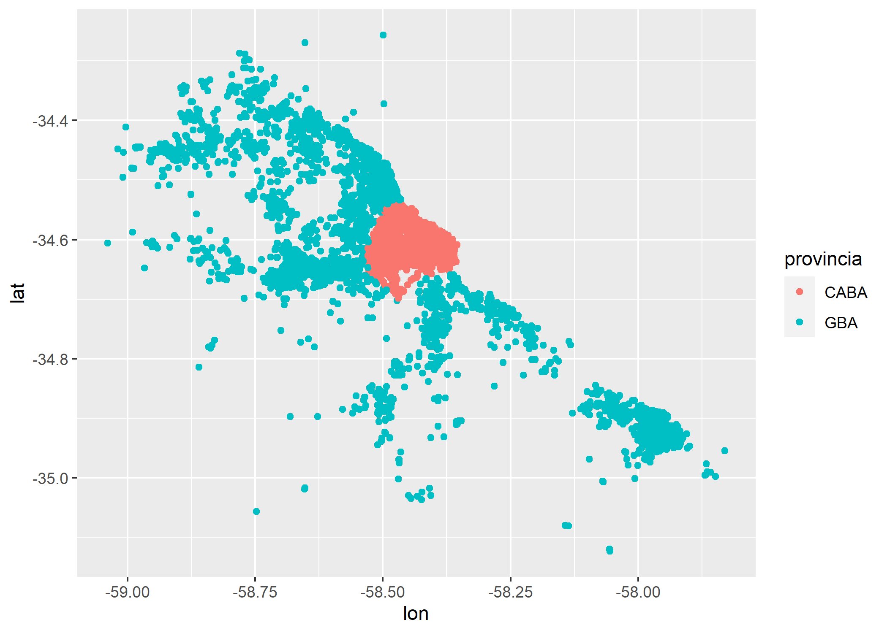
Con mucha imaginación uno puede darse cuenta que los datos tienen la forma de AMBA, pero está faltando información que nos facilite la lectura del mismo. Para esto sumemos un dataset más a nuestro proyecto que en este caso, será un dataset espacial en formato shapefile (SHP) con las geometrías correspondientes a todos los partidos de AMBA. Pueden descargarlo (es un .zip que contiene el SHP) en el siguiente link: https://data.world/angie-scetta/partidos-amba
Recomendación: Al igual que con el csv que trabajamos en las clases anteriores, al descargar el shape deberán moverlo de la carpeta “Descargas” a la carpeta llamada “data” dentro del Proyecto donde estan trabajando.
Para poder cargar nuestros datos espaciales en formato shp utilizaremos la función st_read() de la siguiente forma:
partidos_amba <- st_read("data/partidos_amba.shp")## Reading layer `partidos_amba' from data source `E:\03-OTROS\SCA-CURSOS-2020\sca-big-data-urbana\data\partidos_amba.shp' using driver `ESRI Shapefile'
## Simple feature collection with 48 features and 3 fields
## geometry type: MULTIPOLYGON
## dimension: XY
## bbox: xmin: -59.3392 ymin: -35.23893 xmax: -57.70946 ymax: -34.23007
## CRS: 4326Veamos que información contiene:
head(partidos_amba)## Simple feature collection with 6 features and 3 fields
## geometry type: MULTIPOLYGON
## dimension: XY
## bbox: xmin: -59.05579 ymin: -34.91331 xmax: -58.27953 ymax: -34.26732
## CRS: 4326
## nombre provincia area_km2 geometry
## 1 Avellaneda GBA 57.25 MULTIPOLYGON (((-58.33444 -...
## 2 Tigre GBA 381.99 MULTIPOLYGON (((-58.5167 -3...
## 3 Pilar GBA 382.95 MULTIPOLYGON (((-58.90312 -...
## 4 Moreno GBA 186.36 MULTIPOLYGON (((-58.82401 -...
## 5 Merlo GBA 173.97 MULTIPOLYGON (((-58.72917 -...
## 6 La Matanza GBA 328.26 MULTIPOLYGON (((-58.52885 -...Las primeras 3 columnas presentan el nombre del partido, la provincia y el área en km2. Hasta acá son datos muy similares a las que ya veníamos encontrando en los dataset tradicionales; sin embargo, aparece una 4ta columna llamada “geometry” que hasta ahora no la habíamos visto y es donde se aloja la geometría de cada uno de los registros. La información de este campo es la que hace que el dataset sea espacial.
Si queda alguna duda, podemos utilizar la función class() para ver con que tipo de datos estamos trabajando:
class(datos_amba)## [1] "data.frame"Tal como lo imaginábamos, datos_amba es un simple dataframe.
class(partidos_amba)## [1] "sf" "data.frame"Pero partidos_amba, es un dataset espacial u objeto del tipo “sf”, que hace referencia a “simple features” por estar compuesto de geometrías bidimensionales (polígono, punto, línea, multipunto, multilínea, etc.).
Para poder visualizar toda esta información plasmada en un mapa vamos a utilizar nuevamente ggplot() pero como en esta oportunidad queremos sumar capas geográficas (sf) trabajaremos con geom_sf(). Veamos un ejemplo:
ggplot(partidos_amba)+
geom_sf()Como habrán notado, la lógica en la estructura del chunk que utilizamos para hacer este mapa es la misma del capítulo anterior, donde dentro del ggplot() asignamos el dataset y luego sumamos la capa a graficar/mapear (en este caso un objeto sf).
En el mapa podemos ver como las geometrías de cada registro del dataset espacial son polígonos que representan los partidos de AMBA. Probemos agregar algún atributo estético aes():
ggplot(partidos_amba)+
geom_sf(aes(fill=area_km2))Ya tenemos nuestro primer mapa coroplético. Probemos ajustando algunas cuestiones estéticas: cambiemos la paleta (y su escala) y el color del borde de los polígonos.
ggplot(partidos_amba)+
geom_sf(aes(fill=area_km2), color="white")+
scale_fill_viridis_c(breaks=c(0,250,500,750,1000))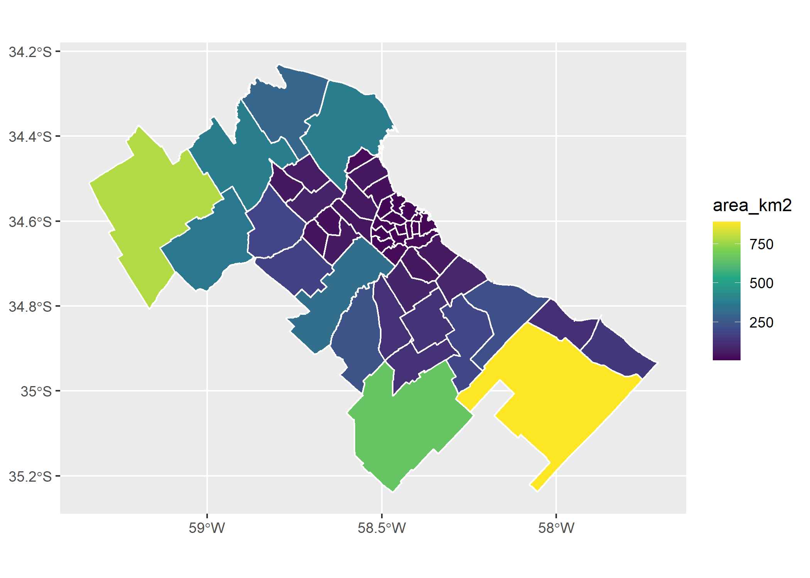
Y ahora si queremos visualizar en un mismo mapa el dataset espacial (partidos_amba) y el dataset tradicional (datos_amba) tenemos que tener en cuenta 2 cosas:
Cuando utilizamos 2 capas (en este caso
geom_sf()ygeom_point()), tenemos que asignarle a cada una el dataset dentro de la capa yggplot()queda “vacío”.Las capas se grafican en el mismo orden que se escribe el código, es decir que la que agregamos primero (en este caso partidos_amba) será el fondo de la que agreguemos luego (datos_amba).
Veamos esto en detalle:
ggplot()+
geom_sf(data=partidos_amba)+
geom_point(data=datos_amba, aes(x=lon, y=lat, color=provincia))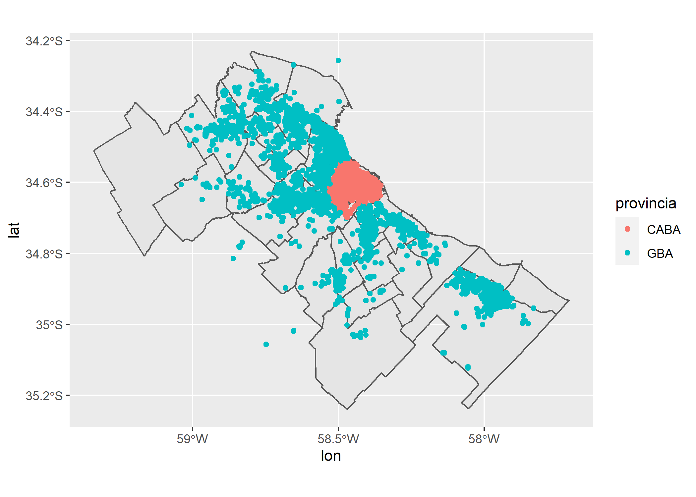
En el mapa anterior hay tantos puntos que nos resulta muy difícil poder encontrar patrones que nos permitan entender donde se concentran más cantidad de puntos y donde menos. En estos casos podemos recurrir a los mapas de densidad de puntos que nos ayudarán a encontrar los “hot spots”.
En R hay varias formas de mapear esto, pero hoy optaremos por geom_bin2d(), que divide el plano en una grilla y cuenta la cantidad de puntos que aparecen en cada celda.
ggplot()+
geom_sf(data=partidos_amba)+
geom_bin2d(data = datos_amba, aes(x = lon, y = lat))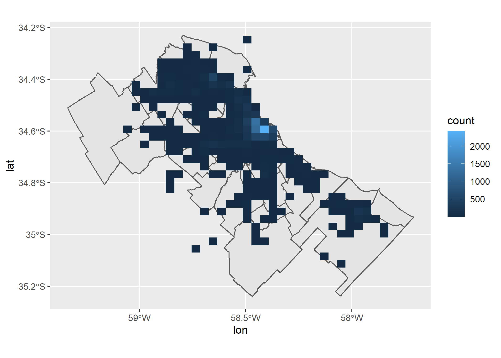
Ahora si nos encontramos con un hot spot que antes no veíamos. Se ve muy claro como en Palermo se concentran la mayor cantidad de propiedades publicadas en Junio y Julio en Properati. Pero, ¿Existirá una diferencia entre los 2 meses? Respondamos esto con un facetado por created_on:
ggplot()+
geom_sf(data=partidos_amba)+
geom_bin2d(data = datos_amba, aes(x = lon, y = lat))+
facet_grid(~created_on)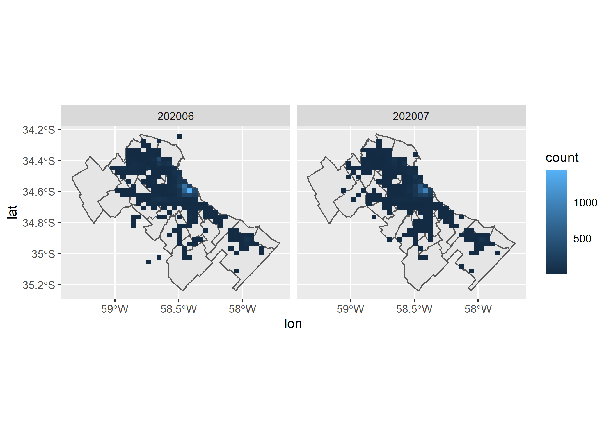
Claramente los patrones de ambos meses son muy parecidos, así que mantengamos un único mapa pero cambiemos el color y el tamaño de los bins (celdas):
ggplot()+
geom_sf(data=partidos_amba)+
geom_bin2d(data = datos_amba, aes(x = lon, y = lat), alpha=0.75, bins=50)+
scale_fill_viridis_c()¿Y cómo hacemos si queremos ver este mapa con un “zoom” solo de CABA?
Tenemos que filtrar ambas capas así:
ggplot()+
geom_sf(data=filter(partidos_amba, provincia=="CABA"))+
geom_bin2d(data = filter(datos_amba, provincia=="CABA"), aes(x = lon, y = lat), alpha=0.75)+
scale_fill_viridis_c()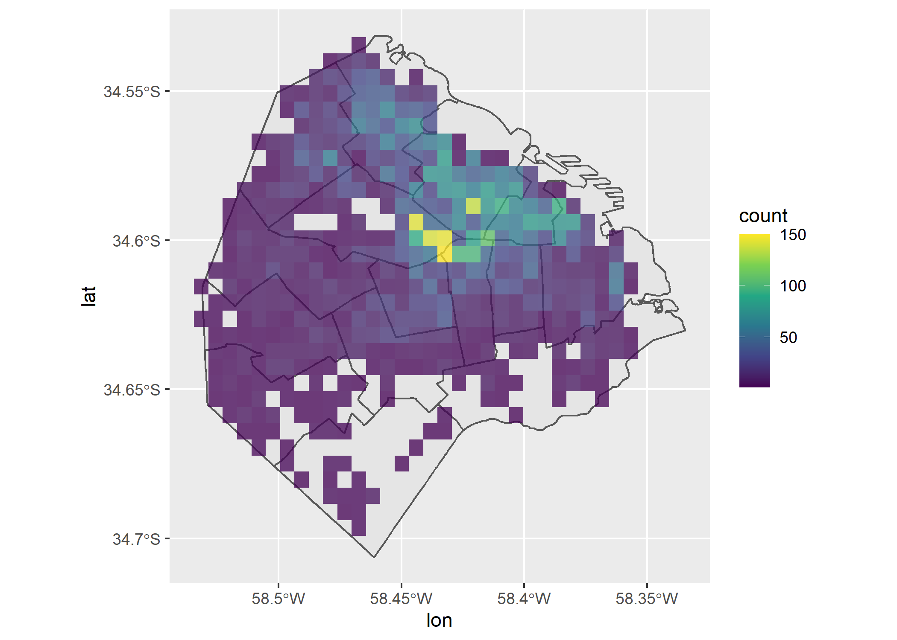
Viendo el mapa anterior nos cambia un poco la percepción y ya no parecería ser solo la Comuna 14 la que tiene la mayor densidad de propiedades, sino que se ve una zona con gran densidad en la Comuna 15 (por Villa Crespo).
Pero bueno, a pesar de haber llegado a un mapa que nos permitió sacar muchas conclusiones, aún estamos trabajando con 2 dataset separados que no se han unido. ¡Veamos como cruzar y unificar todos estos datos!
4.2 Cruzar datos tradicionales y espaciales
Es muy común que a la hora de trabajar con datos no encontremos toda la información que necesitamos en un solo dataset. Frente a esto, lo que se hace es unir/cruzar datos provenientes de diferentes fuentes de información. En este apartado veremos como realizar estos cruces entre datos tradicionales y espaciales.
Para poder unir 2 set de datos ambos tienen que tener algo en común (alguna columna como por ejemplo un ID), sino sería imposible que R entienda que tiene que unir con qué. Por lo tanto, antes de unirlos deberemos manipularlos y realizarles diferentes tipos de transformaciones que nos permitan llegar a generar esta variable en común.
Por ejemplo en nuestro caso, si queremos unir algún dato a nuestro dataset espacial de partidos, deberíamos tener un valor único por cada nombre de partido (que funciona como el ID de mi dataset espacial).
Trabajemos con las propiedades en venta y manipulemos un poco el dataset tradicional para que podamos unirlos:
datos_amba_venta <- datos_amba %>%
filter(operation_type=="Venta") %>%
group_by(partido) %>%
summarise(cantidad=n(),
valor_m2=mean(price/surface_covered))head(datos_amba_venta)## # A tibble: 6 x 3
## partido cantidad valor_m2
## <fct> <int> <dbl>
## 1 Almirante Brown 24 1824.
## 2 Avellaneda 67 1487.
## 3 Berazategui 47 1787.
## 4 Berisso 3 952.
## 5 Cañuelas 3 1293.
## 6 Comuna 1 542 3526.Bien, ahora que tenemos un dataset de 50 observaciones/registros (partidos) donde para cada partido hay 2 columnas con valores asociados (cantidad y valor del m2), ya estamos en condiciones de hacer una unión con el dataset espacial.
Para esto utilizaremos la función left_join():
partidos_amba <- left_join(partidos_amba, datos_amba_venta, by=c("nombre"="partido"))head(partidos_amba)## Simple feature collection with 6 features and 5 fields
## geometry type: MULTIPOLYGON
## dimension: XY
## bbox: xmin: -59.05579 ymin: -34.91331 xmax: -58.27953 ymax: -34.26732
## CRS: 4326
## nombre provincia area_km2 cantidad valor_m2 geometry
## 1 Avellaneda GBA 57.25 67 1486.522 MULTIPOLYGON (((-58.33444 -...
## 2 Tigre GBA 381.99 887 2674.501 MULTIPOLYGON (((-58.5167 -3...
## 3 Pilar GBA 382.95 493 1680.706 MULTIPOLYGON (((-58.90312 -...
## 4 Moreno GBA 186.36 64 1202.036 MULTIPOLYGON (((-58.82401 -...
## 5 Merlo GBA 173.97 83 1146.151 MULTIPOLYGON (((-58.72917 -...
## 6 La Matanza GBA 328.26 110 1592.995 MULTIPOLYGON (((-58.52885 -...Tal como esperábamos, se agregaron 2 nuevas columnas: cantidad y valor_m2.
Veamos esto en un mapa:
ggplot(partidos_amba)+
geom_sf(aes(fill=valor_m2))+
scale_fill_distiller(palette = "Spectral")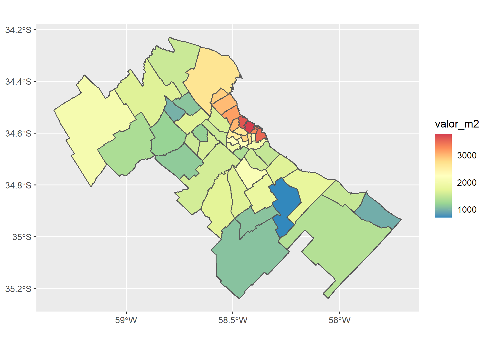
Al igual que en los gráficos, en los mapas pueden agregarse etiquetas (título, subtítulo, etc) y cambiar el aspecto (theme):
ggplot()+
geom_sf(data=partidos_amba, aes(fill=valor_m2), color=NA) +
labs(title = "Valor del m2 en Venta por Partido",
subtitle = "AMBA - Junio y Julio 2020",
fill = "USD/m2",
caption= "Fuente: Properati") +
scale_fill_distiller(palette = "Spectral") +
theme_light()Ahora mapiemos la otra nueva variable: cantidad de propiedades publicadas para venta.
ggplot()+
geom_sf(data=partidos_amba, aes(fill=cantidad), color=NA) +
labs(title = "Cantidad de publicaciones de Venta por Partido",
subtitle = "AMBA - Junio y Julio 2020",
fill = "Cantidad",
caption= "Fuente: Properati") +
scale_fill_distiller(palette = "Spectral") +
theme_light()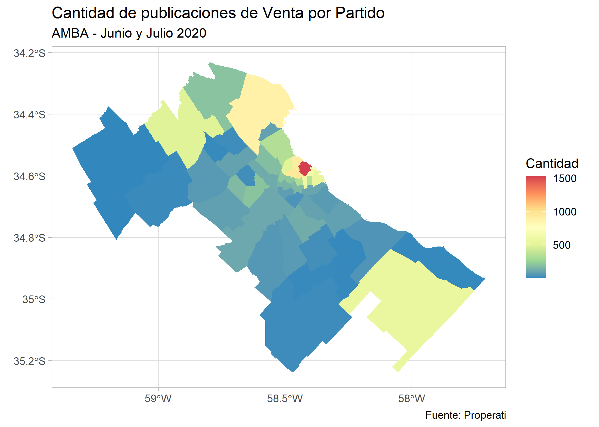
En el mapa se ve como la Comuna 14 tiene el valor más alto, sin embargo, para que estos datos sean comparables entre todos los partidos, es necesario que calculemos una densidad relacionando la cantidad de propiedades y la superficie (km2) de cada uno:
ggplot()+
geom_sf(data=partidos_amba, aes(fill=cantidad/area_km2), color=NA) +
labs(title = "Densidad de publicaciones de Venta por Partido",
subtitle = "AMBA - Junio y Julio 2020",
fill = "Densidad",
caption= "Fuente: Properati") +
scale_fill_distiller(palette = "Spectral") +
theme_light()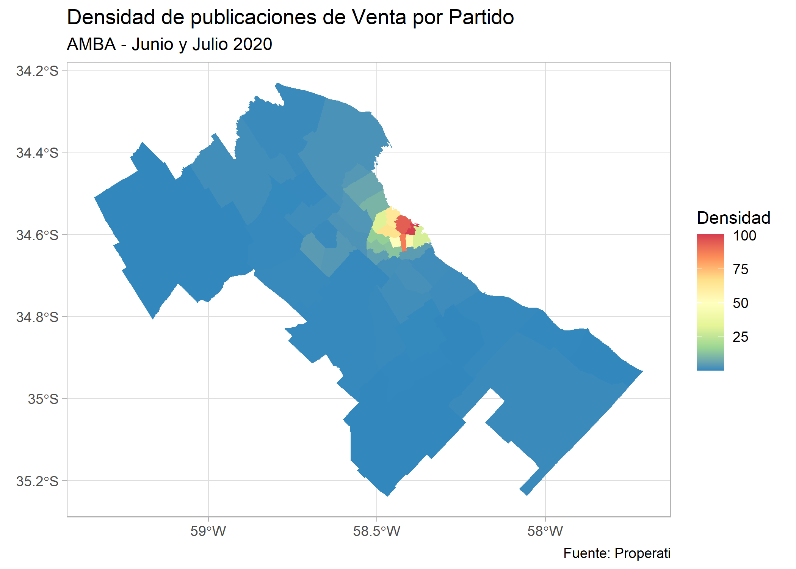
El mapa cambia bastante, ahora todos los partidos de AMBA son color azul, es decir que tienen baja densidad y los de CABA se ven coloreados. Hagamos un zoom en CABA y veamos esto en detalle:
ggplot()+
geom_sf(data=filter(partidos_amba, provincia=="CABA"), aes(fill=cantidad/area_km2), color=NA) +
labs(title = "Densidad de publicaciones de Venta por Comuna",
subtitle = "CABA - Junio y Julio 2020",
fill = "Densidad",
caption= "Fuente: Properati") +
scale_fill_distiller(palette = "Spectral") +
theme_light()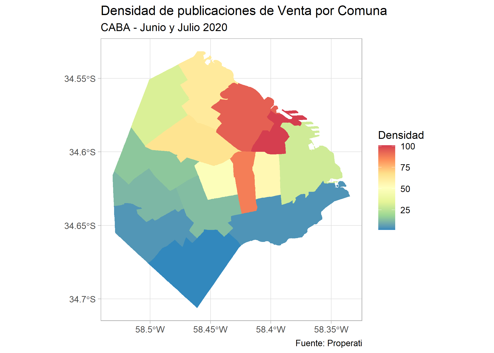
Podemos ver que aparece la Comuna 5 como la más densa seguida por la 14 y la 5. Sin embargo hay varias que tienen una densidad mayor a 50 publicaciones por km2. Veamos cuáles son:
ggplot()+
geom_sf(data=filter(partidos_amba, provincia=="CABA" & cantidad/area_km2>=50), aes(fill=cantidad/area_km2), color=NA) +
geom_sf_label(data=filter(partidos_amba, provincia=="CABA" & cantidad/area_km2>=50), aes(label = nombre), size=2) +
labs(title = "Comunas con más de 50 publicaciones por km2",
subtitle = "CABA - Junio y Julio 2020",
fill = "Densidad",
caption= "Fuente: Properati") +
scale_fill_distiller(palette = "Spectral") +
theme_light()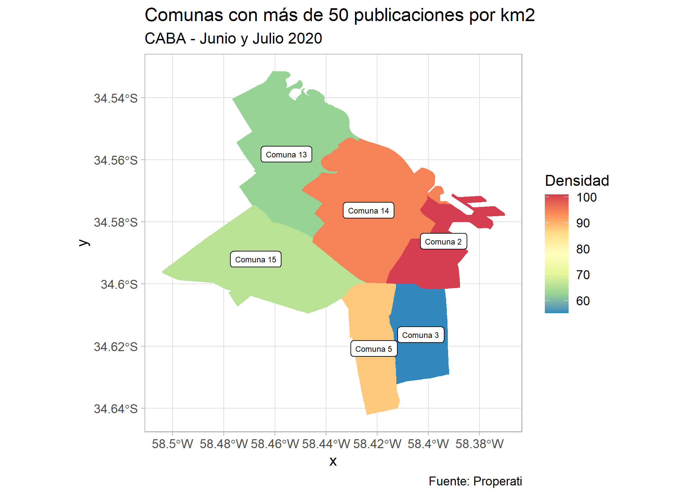
Y por último agreguémosle el mapa de fondo así las comunas no quedan flotando:
ggplot()+
geom_sf(data=filter(partidos_amba, provincia=="CABA")) +
geom_sf(data=filter(partidos_amba, provincia=="CABA" & cantidad/area_km2>=50), aes(fill=cantidad/area_km2)) +
geom_sf_label(data=filter(partidos_amba, provincia=="CABA" & cantidad/area_km2>=50), aes(label = nombre), size=2) +
labs(title = "Cantidad de publicaciones de Venta por Comuna",
subtitle = "CABA - Junio y Julio 2020",
fill = "Cantidad",
x="",
y="",
caption= "Fuente: Properati") +
scale_fill_distiller(palette = "Spectral") +
theme_light()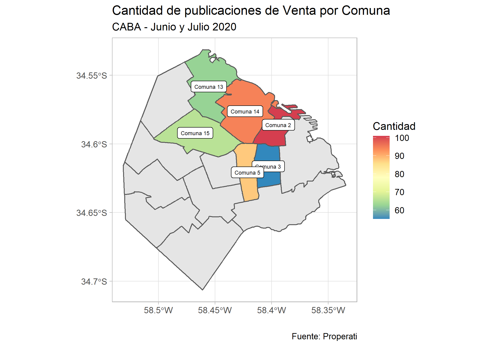
Variables Categóricas en el Mapa
Hasta acá todos los mapas que desarrollamos tomaron color a partir de una variable numérica (cantidad o valor del m2), pero ¿Qué pasa si lo que queremos mapear es una variable categórica, cómo por ejemplo la tipología que más aparece publicada por partido?
Para resolver esta incógnita debemos generar una nueva variable que contenga la información y pueda unirse a nuestro dataset espacial partidos_amba:
datos_amba_tipologia <- datos_amba %>%
group_by(partido, property_type) %>%
summarise(cant_max=n()) %>%
filter(cant_max==max(cant_max))head(datos_amba_tipologia)## # A tibble: 6 x 3
## # Groups: partido [6]
## partido property_type cant_max
## <fct> <fct> <int>
## 1 Almirante Brown Casa 19
## 2 Avellaneda Departamento 47
## 3 Berazategui Departamento 35
## 4 Berisso Casa 3
## 5 Cañuelas Casa 3
## 6 Comuna 1 Departamento 739partidos_amba <- partidos_amba %>%
left_join(datos_amba_tipologia, by=c("nombre"="partido"))head(partidos_amba)## Simple feature collection with 6 features and 7 fields
## geometry type: MULTIPOLYGON
## dimension: XY
## bbox: xmin: -59.05579 ymin: -34.91331 xmax: -58.27953 ymax: -34.26732
## CRS: 4326
## nombre provincia area_km2 cantidad valor_m2 property_type cant_max
## 1 Avellaneda GBA 57.25 67 1486.522 Departamento 47
## 2 Tigre GBA 381.99 887 2674.501 Departamento 898
## 3 Pilar GBA 382.95 493 1680.706 Casa 353
## 4 Moreno GBA 186.36 64 1202.036 Casa 50
## 5 Merlo GBA 173.97 83 1146.151 Casa 54
## 6 La Matanza GBA 328.26 110 1592.995 Departamento 73
## geometry
## 1 MULTIPOLYGON (((-58.33444 -...
## 2 MULTIPOLYGON (((-58.5167 -3...
## 3 MULTIPOLYGON (((-58.90312 -...
## 4 MULTIPOLYGON (((-58.82401 -...
## 5 MULTIPOLYGON (((-58.72917 -...
## 6 MULTIPOLYGON (((-58.52885 -...Efectivamente, se sumaron 2 nuevas columnas: property_type y cant_max. Ahora si, mapiemos por la tipología que más aparece:
ggplot(partidos_amba)+
geom_sf(aes(fill=property_type))
Y modifiquemos su estética como ya aprendimos:
ggplot(partidos_amba)+
geom_sf(aes(fill=property_type), color="black") +
labs(title = "Tipología que predomina en las publicaciones por Partido",
subtitle = "AMBA - Junio y Julio 2020",
fill = "Tipología",
caption= "Fuente: Properati") +
scale_fill_manual(values=c("darkseagreen1", "cyan4"))+
theme_light()
4.3 Cruzar datos espaciales
Muchas veces nos vamos a encontrar con que queremos unir 2 dataset pero no tienen columnas en común y es imposible generarlas; pero hay algo que si tienen en común y que nos permitirá unirlos: la ubicación en el espacio. A esto nos referimos cuando hablamos de “Spatial Join” o “Unión Espacial” y en R lo haremos a partir de la función st_join() que forma parte del paquete sf.
Pero antes de seguir, nos está faltando un segundo dataset espacial ya que hasta ahora solo tenemos uno. Como primer paso vamos a tener que transformar nuestro dataset tradicional “datos_amba” a un dataset espacial utilizando la función st_as_sf() de la siguiente forma:
datos_amba_geo <- datos_amba %>%
st_as_sf(coords = c("lon", "lat"), crs = 4326)head(datos_amba_geo)## Simple feature collection with 6 features and 11 fields
## geometry type: POINT
## dimension: XY
## bbox: xmin: -58.52914 ymin: -34.66253 xmax: -58.3609 ymax: -34.53344
## CRS: EPSG:4326
## created_on provincia partido rooms surface_total surface_covered price currency
## 1 202006 CABA Comuna 7 1 40 37 22500 ARS
## 2 202006 CABA Comuna 13 1 30 30 18000 ARS
## 3 202006 CABA Comuna 13 1 31 29 17900 ARS
## 4 202006 CABA Comuna 1 1 35 35 42000 ARS
## 5 202006 GBA Vicente López 1 36 27 19000 ARS
## 6 202006 GBA La Matanza 2 24 24 12000 ARS
## title
## 1 Departamento - Flores
## 2 Retasado! Monoambiente en Nuñez, excelente ubicación!
## 3 Departamento - Belgrano
## 4 Monoambiente con cochera. Zencity. Puerto Madero
## 5 Alquiler TORRE dpto de 1o2 ambientes - excelente luz y vista cochera optativa
## 6 PH - Lomas Del Mirador
## property_type operation_type geometry
## 1 Departamento Alquiler POINT (-58.46222 -34.61917)
## 2 Departamento Alquiler POINT (-58.46652 -34.5546)
## 3 Departamento Alquiler POINT (-58.46461 -34.56318)
## 4 Departamento Alquiler POINT (-58.3609 -34.61836)
## 5 Departamento Alquiler POINT (-58.49345 -34.53344)
## 6 PH Alquiler POINT (-58.52914 -34.66253)Ahora si, nuestro dataset datos_amba se transformó en espacial y eso lo vemos con el reemplazo de sus columnas X e Y por una única columna llamada “geometry”. Hagamos un mapa y veamos que pasa:
ggplot(datos_amba_geo)+
geom_sf()A simple vista son iguales que cuando hicimos el geom_point() pero la diferencia es que ahora son espaciales y ya estamos en condiciones de unirlos con otro dataset espacial. En este caso, como queremos generar información nueva, vamos a unirlos con un SHP que contenga información nueva que nuestros datos no tienen como por ejemplo los barrios de CABA a los que corresponde cada publicación.
Para esto vamos a descargar el SHP de https://data.world/angie-scetta/barrios-caba, guardarlo en la carpeta “data” y luego cargarlo de la siguiente forma:
barrios_caba <- st_read("data/barrios_caba.shp")## Reading layer `barrios_caba' from data source `E:\03-OTROS\SCA-CURSOS-2020\sca-big-data-urbana\data\barrios_caba.shp' using driver `ESRI Shapefile'
## Simple feature collection with 48 features and 1 field
## geometry type: POLYGON
## dimension: XY
## bbox: xmin: -58.53152 ymin: -34.70529 xmax: -58.33515 ymax: -34.52649
## CRS: 4326Veamos los polígonos:
ggplot(barrios_caba)+
geom_sf()
Efectivamente tienen forma de los 48 barrios de CABA. Superpongamos los datos de Properati que convertimos en el paso anterior para ver cuanto se “solapan” con el SHP de barrios:
ggplot()+
geom_sf(data=barrios_caba)+
geom_sf(data=datos_amba_geo, alpha=0.1)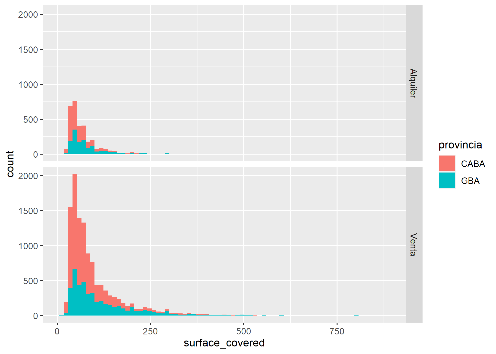
Como mi SHP solo contiene los barrios de CABA, obviamente solo se solapa con los puntos que corresponden a propiedades ubicadas en CABA.
Ahora si, hagamos nuestra unión espacial con st_join() para que, cada registro de datos_amba_geo sume una nueva columna que indique a que barrio pertenece:
datos_caba_geo <- st_join(datos_amba_geo, barrios_caba)head(datos_caba_geo)## Simple feature collection with 6 features and 12 fields
## geometry type: POINT
## dimension: XY
## bbox: xmin: -58.52914 ymin: -34.66253 xmax: -58.3609 ymax: -34.53344
## CRS: EPSG:4326
## created_on provincia partido rooms surface_total surface_covered price currency
## 1 202006 CABA Comuna 7 1 40 37 22500 ARS
## 2 202006 CABA Comuna 13 1 30 30 18000 ARS
## 3 202006 CABA Comuna 13 1 31 29 17900 ARS
## 4 202006 CABA Comuna 1 1 35 35 42000 ARS
## 5 202006 GBA Vicente López 1 36 27 19000 ARS
## 6 202006 GBA La Matanza 2 24 24 12000 ARS
## title
## 1 Departamento - Flores
## 2 Retasado! Monoambiente en Nuñez, excelente ubicación!
## 3 Departamento - Belgrano
## 4 Monoambiente con cochera. Zencity. Puerto Madero
## 5 Alquiler TORRE dpto de 1o2 ambientes - excelente luz y vista cochera optativa
## 6 PH - Lomas Del Mirador
## property_type operation_type BARRIO geometry
## 1 Departamento Alquiler FLORES POINT (-58.46222 -34.61917)
## 2 Departamento Alquiler NUÑEZ POINT (-58.46652 -34.5546)
## 3 Departamento Alquiler BELGRANO POINT (-58.46461 -34.56318)
## 4 Departamento Alquiler PUERTO MADERO POINT (-58.3609 -34.61836)
## 5 Departamento Alquiler <NA> POINT (-58.49345 -34.53344)
## 6 PH Alquiler <NA> POINT (-58.52914 -34.66253)Como verán, a cada registro se le unió una columna con el nombre del barrio con el que solapan, y a aquellas propiedades ubicadas fuera de CABA se les asignó un valor nulo o NA. Veamos esto en un mapa:
ggplot()+
geom_sf(data=barrios_caba)+
geom_sf(data=datos_caba_geo, aes(color=BARRIO), alpha=0.5, show.legend = FALSE)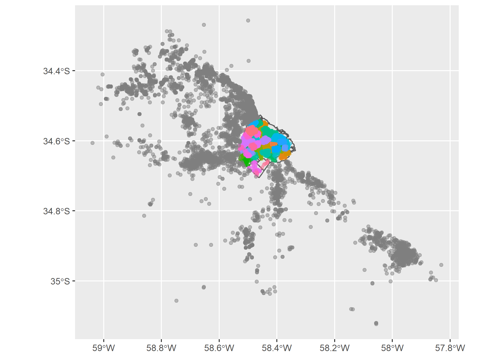
Se ve como todos los puntos que se ubican en CABA tienen color según sus barrios, pero los puntos fuera de CABA quedaron grises porque su valor es NA. Para “limpiar” esto filtremos todos los registros que tienen barrio asignado:
datos_caba_geo <- datos_caba_geo %>%
filter(!is.na(BARRIO))ggplot()+
geom_sf(data=barrios_caba)+
geom_sf(data=datos_caba_geo, aes(color=BARRIO), alpha=0.5, show.legend = FALSE)Ya tenemos solo los registros de CABA. ¿Y ahora cómo hacemos si queremos realizar un mapa coroplético como los anteriores pero coloreando los barrios según valor del m2? Nuevamente manipulamos el set de datos con group_by() y luego utilizamos left_join():
datos_caba_geo <- datos_caba_geo %>%
group_by(BARRIO, operation_type) %>%
summarise(valor_m2=mean(price/surface_covered))head(datos_caba_geo)## Simple feature collection with 6 features and 3 fields
## geometry type: MULTIPOINT
## dimension: XY
## bbox: xmin: -58.50249 ymin: -34.62174 xmax: -58.39217 ymax: -34.58573
## CRS: EPSG:4326
## # A tibble: 6 x 4
## # Groups: BARRIO [3]
## BARRIO operation_type valor_m2 geometry
## <fct> <fct> <dbl> <MULTIPOINT [°]>
## 1 AGRONOM~ Alquiler 471. ((-58.50249 -34.59347), (-58.49966 -34.59564), (-58.495~
## 2 AGRONOM~ Venta 2869. ((-58.49994 -34.59319), (-58.49984 -34.59559), (-58.499~
## 3 ALMAGRO Alquiler 488. ((-58.43224 -34.60375), (-58.43216 -34.60207), (-58.431~
## 4 ALMAGRO Venta 2714. ((-58.43277 -34.60322), (-58.43229 -34.60277), (-58.431~
## 5 BALVANE~ Alquiler 478. ((-58.4128 -34.6028), (-58.41252 -34.60927), (-58.4118 ~
## 6 BALVANE~ Venta 2211. ((-58.41409 -34.61113), (-58.41314 -34.61122), (-58.412~Pero como vimos al principio de la clase, si usamos left_join(), uno de los dataset no tiene que ser espacial. Para esto, transformemos nuestro dataset espacial data_caba_geo a un dataset tradicional, quitándole la geometría con st_set_geometry():
datos_caba_geo <- datos_caba_geo %>%
st_set_geometry(NULL)head(datos_caba_geo)## # A tibble: 6 x 3
## # Groups: BARRIO [3]
## BARRIO operation_type valor_m2
## <fct> <fct> <dbl>
## 1 AGRONOMIA Alquiler 471.
## 2 AGRONOMIA Venta 2869.
## 3 ALMAGRO Alquiler 488.
## 4 ALMAGRO Venta 2714.
## 5 BALVANERA Alquiler 478.
## 6 BALVANERA Venta 2211.Ahora si, solo tiene 3 columnas con el nombre del barrio, la operación inmobiliaria y el valor del m2 pero ya no tiene geometría. Procedamos a realizar la unión:
barrios_caba <- left_join(barrios_caba, datos_caba_geo, by="BARRIO")Y a mapear el valor de Venta:
ggplot()+
geom_sf(data=filter(barrios_caba, operation_type=="Venta"), aes(fill=valor_m2))
Ya tenemos un mapa de valor del m2 en Venta por Barrio, y como siempre Puerto Madero presenta el valor más alto. Mejoremos su estética:
ggplot()+
geom_sf(data=filter(barrios_caba, operation_type=="Venta"), aes(fill=valor_m2), color=NA)+
labs(title = "Valor del m2 de Venta",
subtitle = "CABA - Junio y Julio 2020",
fill = "USD/m2",
caption= "Fuente: Properati") +
scale_fill_distiller(palette = "YlOrRd", direction = 1) +
theme_light()
Y el de valor del m2 en alquiler:
ggplot()+
geom_sf(data=filter(barrios_caba, operation_type=="Alquiler"), aes(fill=valor_m2), color=NA)+
labs(title = "Valor del m2 de Alquiler",
subtitle = "CABA - Junio y Julio 2020",
fill = "ARS/m2",
caption= "Fuente: Properati") +
scale_fill_distiller(palette = "YlOrRd", direction = 1) +
theme_light()En el mapa anterior se puede observar que hay barrios en el sur de la Ciudad que directamente no tienen propiedades en alquiler.
4.4 Agregar mapa base
Si bien hasta aquí hemos hecho mapas bastante completos, nunca está de más agregarles un fondo que nos ayude a interpretar el contexto. Para lograr esto utilizaremos la librería ggmap() que cómo ya sabemos, primero debemos instalarla y luego activarla:
#install.packages(ggmap)
library(ggmap)Para poder obtener un mapa de fondo con ggmap, primero tengo que delimintar cuál es mi “bounding box”, que hace referencia a los límites de un cuadro en el cual se encuentran todos mis datos. Esto lo haremos de la siguiente forma:
bbox_barrios <- as.numeric(st_bbox(barrios_caba))Una vez que ya tenemos el bbox, vamos a usar get_stamenmap() para descargar de internet el mapa. En este caso utilizaremos un mapa de tipo “toner-lite” pero hay otras opciones que pueden verse aquí: http://maps.stamen.com/
mapa_caba <- get_stamenmap(bbox = bbox_barrios,
maptype = "toner-lite",
zoom=12)Con ggmap() veamos que nos hemos descargado:
ggmap(mapa_caba)
Ahora podemos reutilizar el código del ejemplo de mapa del valor de m2 de venta por barrio, simplemente reemplazando la primera línea, donde inicializamos un objeto ggplot por una línea que llame a nuestro mapa base de la siguiente forma:
ggmap(mapa_caba)+
geom_sf(data=filter(barrios_caba, operation_type=="Venta"), aes(fill=valor_m2), alpha=0.75, inherit.aes = FALSE)+
labs(title = "Valor del m2 de Venta",
subtitle = "CABA - Junio y Julio 2020",
fill = "USD/m2",
caption= "Fuente: Properati") +
scale_fill_distiller(palette = "YlOrRd", direction = 1) +
theme_light()Además de cambiar la primer línea de código, nótese que agregamos un inherit.aes=FALSE dentro del geom_sf() para anular la estética predeterminada del objeto ggmap.
Y listo! Ya tenemos un mapa con fondo y con información que generamos nosotros a partir de un cruce espacial.